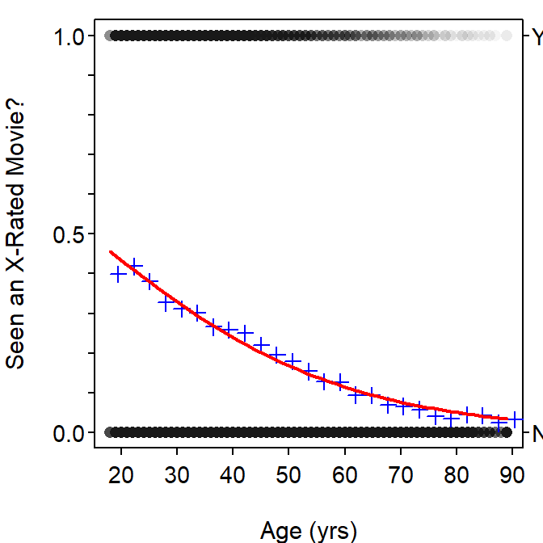

X-Rated Movies
- The logistic regression model seems to fit the proportions of respondents that had seen an x-rated movie by age (i.e., blue pluses; Figure 1).
- The estimated slope indicates that the log odds that a respondent has seen an x-rated movie decrease between 0.0425 and 0.0466, on average, for every increase in age by one year.
- The back-transformed estimated slopes indicates that the odds that a respondent has seen an x-rated movie are between 0.9545 and 0.9584 as much after an increase of one year.
- The log odds of having seen an x-rated movie for a 50-year-old is 0.6255+-0.0445*50 = -1.6017.
- The log odds of having seen an x-rated movie for a 50-year-old as computed in R is also -1.6017 (see code in appendix).
- The odds of having seen an x-rated for a 50-year-old is \(e^{-1.6017}\)=0.2015.
- The probability of having seen an x-rated for a 50-year-old is \(\frac{0.2015}{1+0.2015}\)=0.1677.
- The probability of having seen an x-rated for a 50-year-old as computed in R is also 0.1677 (see code in appendix).
- The probability of having seen an x-rated movie for a 30-year old is 0.3294. Thus, the odds that a 30-year old has seen an x-rated movie is \(\frac{0.3294}{1-0.3294}\)=0.4912.
- The probability of having seen an x-rated movie for a 31-year old is 0.3197. Thus, the odds that a 31-year old has seen an x-rated movie is \(\frac{0.3197}{1-0.3197}\)=0.4698. The ratio of the odds for the 31-year-old to the odds of the 30-year-old is \(\frac{0.4698}{0.4912}\) = 0.9564, which is the same as the back-transformed slope (i.e., \(e^{-0.0445}\)).

Figure 1: Fitted plot for the logistic regression of whether or not the respondent had seen an x-rated movie and the respondent’s age.
R Appendix.
df <- read.csv("XMovieAge.csv")
df <- filterD(df,age<96)
glm1 <- glm(seen~age,data=df,family=binomial)
coef(glm1)
confint(glm1)
predict(glm1,data.frame(age=50)) # log odds
predict(glm1,data.frame(age=50),type="response") # probability
predict(glm1,data.frame(age=30),type="response")
predict(glm1,data.frame(age=31),type="response")